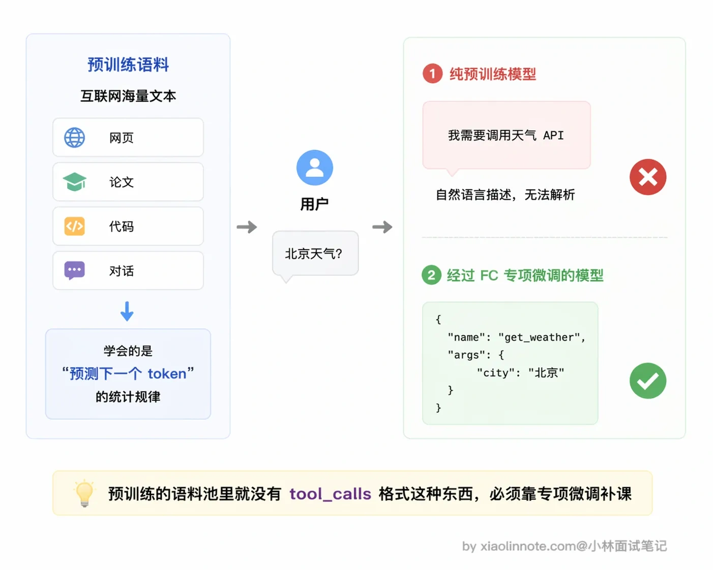
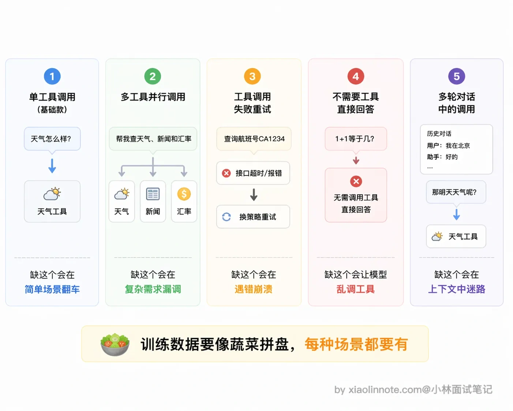
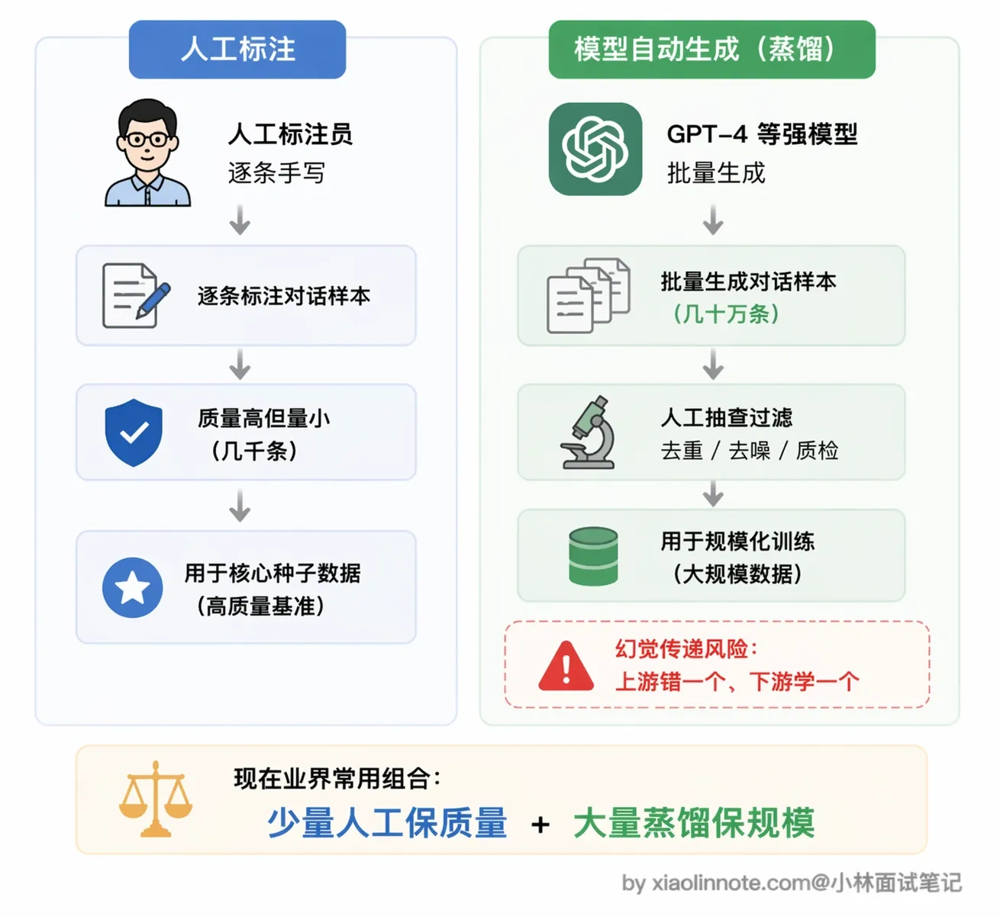
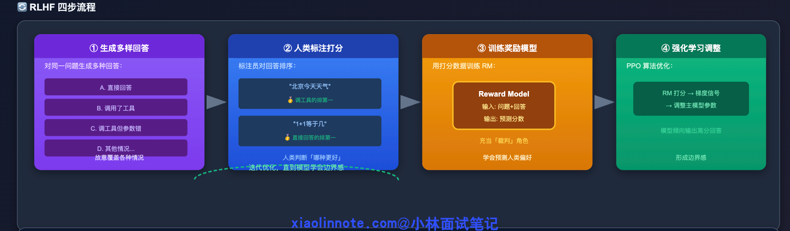
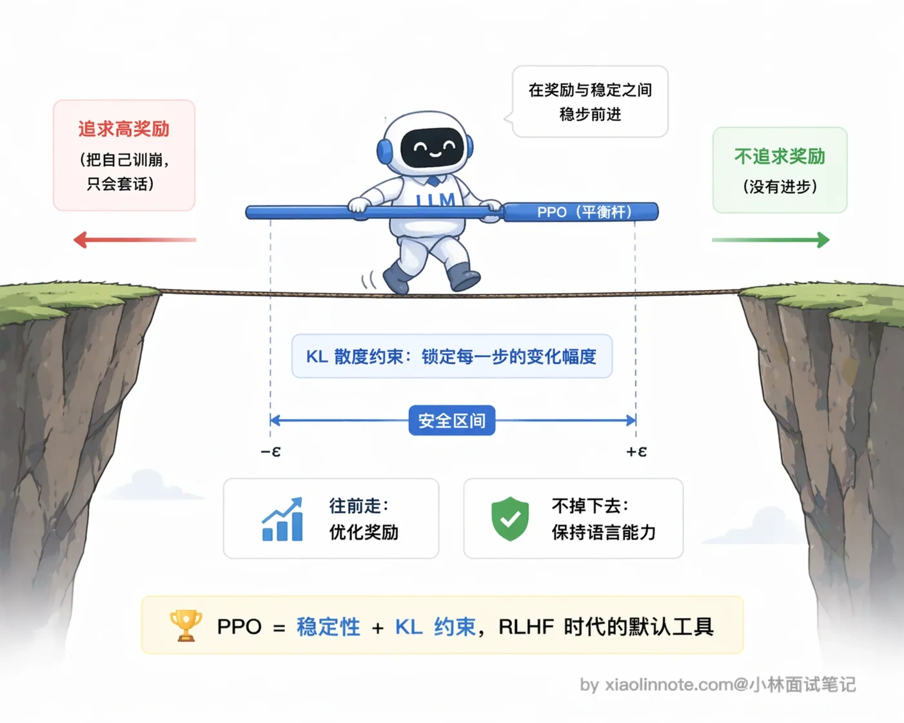
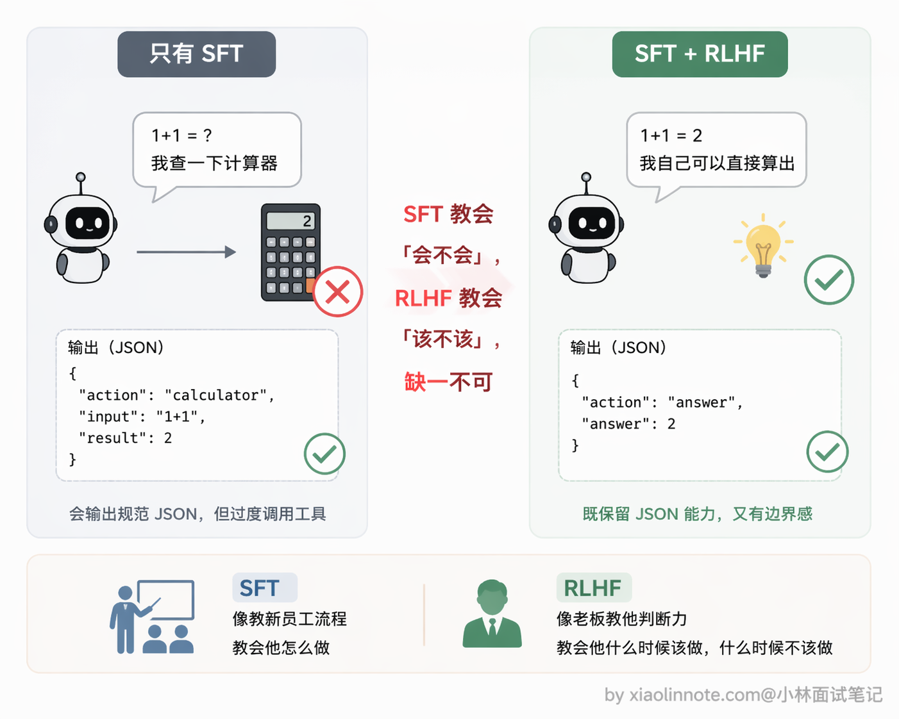

本篇目录
3. 大模型的 Function Call 能力是怎么训练出来的？
👔面试官：详细说说大模型的 Function Call 能力是怎么训练出来的？
🙋♂️我：应该就是在预训练阶段，训练语料里包含了一些 API 调用的代码，模型自然就学会了吧？
👔面试官：预训练学到的是「预测下一个 token」，模型最多能描述「我要调 API」，但不会输出结构化 JSON 调用请求。这是两个完全不同的东西，你把预训练和专项微调搞混了。
🙋♂️我：哦，那就是 SFT 微调，给模型看很多工具调用的样本对吧？那训练数据只要包含正常的单工具调用场景就够了？
👔面试官：单工具调用只是最基础的场景。多工具并行调用、工具调用失败后重试、不需要工具直接回答、多轮对话中的工具调用，这些场景训练数据里都要覆盖到，缺一个就会在对应场景翻车。而且你还是只提了 SFT，RLHF 阶段怎么解决「该不该调」的边界感问题，训练数据从哪来，这些关键环节一个都没讲到，回去好好整理一下。
确实，Function Call 的训练远不止「喂点样本」这么简单。下面我把两个训练阶段、训练数据的构造和来源、以及各自解决什么问题，完完整整地讲一遍。
💡 简要回答
Function Call 的能力主要靠两个训练阶段来培养，这两个阶段解决的是不同的问题。
第一个是 SFT，就是给模型喂大量「包含工具调用的完整对话样本」，每条样本覆盖工具定义、用户问题、模型应该输出的结构化 JSON 调用、工具执行结果、最终答案，让模型通过模仿学会整套流程。但光有 SFT 不够，模型可能学得过激，遇到什么问题都想调工具。
第二个阶段是 RLHF，通过人类标注「哪种回答更好」来训练奖励模型，再用强化学习调整主模型，让它学会「能直接回答的就直接回答，需要实时数据才去调工具」这个边界感。
一句话总结：SFT 教会怎么调，RLHF 教会什么时候调。
📝 详细解析
很多人以为 Function Call 是大模型「聪明」之后自然就会的东西，其实不是。就算是 GPT-4，如果没有经过工具调用的专项训练，它遇到「北京今天天气怎么样」这个问题，顶多也就输出一句「我需要查询天气数据」，这是在描述一个意图，而不是在输出可以被程序解析和执行的结构化 JSON。这两件事之间有本质的差距。
为什么预训练学不会这件事？关键原因是预训练语料里压根没有「标准工具调用 JSON」这种模式。预训练喂给模型的是互联网上的海量文本，里面有代码、有文档、有对话，但几乎没有「给定一组工具 schema，该在什么场景输出什么 JSON」这样的成对样本。

模型在预训练期间的所有权重更新，都是基于「预测下一个最可能的 token」这个目标，它记住的是人类文字里的统计规律，而「遇到天气问题就输出一段固定格式的 tool_calls JSON」不是人类文字里自然存在的模式，权重里根本没有相关经验可以调用。所以这件事必须靠专项微调来补。
Function Call 的核心训练分两个阶段，每个阶段解决不同的问题，缺一不可。
阶段一：SFT，让模型「学会怎么调」
SFT（Supervised Fine-Tuning，监督微调）的核心动作很简单：给模型喂大量正确示例，让它通过模仿来学习。对 Function Call 能力来说，就是构造「包含完整工具调用流程的对话样本」，一条样本里包含所有角色的消息。
一条完整的训练样本大概是这样的结构：首先是 system 消息，里面注入了工具的定义，工具叫什么名字、是干什么用的、接受哪些参数。模型是从这里「认识」工具的，就像你给新员工一份工具手册，告诉他公司有哪些系统可以用。接着是 user 消息，就是用户的提问，比如「北京今天天气怎么样」。
然后是关键的一步：assistant 的消息不是自然语言，而是结构化的 JSON 调用请求，类似 {"tool_calls": [{"name": "get_weather", "arguments": {"city": "北京"}}]}，这是「正确答案」，是模型通过训练需要学会输出的内容。之后是 tool 角色的消息，是工具执行后返回的结果，比如「晴天，15°C，东北风 3 级」。最后 assistant 再出现一次，根据工具结果给出最终的自然语言答案。
这套完整的对话结构覆盖了整个调用链路。模型通过反向传播（backpropagation）来学习：给定样本里的正确 JSON 调用，当模型输出的内容偏离这个正确答案时，损失函数就会产生惩罚信号，梯度往回传，一点点调整模型内部的参数权重，让下次输出更接近正确格式。
大量样本反复训练，模型就把这套「看到工具定义 + 看到用户问题 -> 输出规范 JSON」的模式「记住」了。就像背单词，看一遍不够，反复遇到、反复纠错，最终形成了肌肉记忆。
训练数据需要覆盖哪些场景
训练数据的多样性直接决定了 Function Call 能力的上限，不能只有「正常调一个工具」这一种情况。

好的训练数据至少要覆盖这几类场景。最基础的当然是单工具调用，一个问题对应一个工具，这是入门款。但光有这个远远不够，还需要多工具并行调用的样本，比如用户问「帮我查北京和上海的天气」，模型应该一次性输出两个调用请求而不是傻乎乎地一个一个来，如果训练数据里没见过这种场景，模型就不知道可以并行。
另一个容易忽略但非常关键的场景是工具调用失败后的处理。现实中工具不可能百分百成功，API 超时、参数格式不对、权限不足，各种错误都有可能出现，模型要能识别错误信息并换个方式处理，而不是直接崩掉或者傻傻地重复同样的调用。
还有一类场景很多人想不到：不需要调工具、直接回答。这个其实非常重要，「1+1 等于几」「帮我总结这段话」这类问题完全不需要工具，模型得学会判断「我能自己解决，不用调」。如果训练数据里全是「调用工具」的正例，模型就会形成「遇到问题就调工具」的惯性，该直接回答的时候也去调，画蛇添足。
最后是多轮对话中的工具调用，上下文里已经有过工具结果，模型要能正确理解和引用之前的结果，而不是无视历史重新调用。这些场景的覆盖程度，直接影响模型在实际使用中的表现，缺哪个就会在哪个场景下翻车。
训练数据从哪来
构造 Function Call 训练数据主要有两种方式。
第一种是人工标注，雇标注员，给定用户问题和工具定义，让他们写出正确的调用示例。这种方式质量好，因为人写的样本准确度有保障，但成本极高，通常只用于核心种子数据的构造，没法大规模扩展。
第二种是模型自动生成，业界也叫 Self-Instruct 或 Distillation（蒸馏）。核心思路是用一个已经具备 Function Call 能力的强模型（比如 GPT-4）批量生成训练样本，再人工抽查质量。这是现在业界的主流做法，成本低、量大，但有一个隐患：如果上游模型本身生成了错误的样本，下游模型就会把这个错误一起学进去，业界叫做「模型蒸馏的幻觉传递」。所以抽查质量这一步不能省，不然相当于在教模型学错误答案。

阶段二：RLHF，对齐「该不该调」的边界感
SFT 之后，模型已经学会了「怎么调工具」，但还有一个问题没解决：什么时候应该调工具，什么时候直接回答。
SFT 的训练样本都是「正确调用」的例子，模型看多了，可能学得有点偏激，遇到什么问题都想调工具，不管有没有必要。
「1+1 等于几」不应该调计算器，直接回答 2 就行；「帮我总结这段文字」完全不需要任何工具，直接做就行；只有「北京今天天气」这类需要实时数据的问题才应该调。
这种「能直接回答就直接回答，需要外部数据才去调」的边界感，SFT 很难教好，因为光靠固定的正确样本没法覆盖所有边界情况。RLHF 就是来解决这个问题的。
RLHF（Reinforcement Learning from Human Feedback，人类反馈强化学习）的流程分四步。

第一步是生成多样回答。对同一个问题，让模型生成多种回答，有直接回答的，有调了工具的，有调了工具但参数填错的，故意覆盖各种情况。
第二步是人类标注打分。标注员对这些回答进行排序，比如「北京今天天气怎么样」这道题，调了天气工具的回答排第一，因为不调工具就没法给出准确的实时数据；「1+1 等于几」这道题，直接回答 2 的排第一，调计算器工具的反而是画蛇添足，排末尾。
第三步是训练奖励模型。用这批打分排序的数据，单独训练一个神经网络，叫做「奖励模型」（Reward Model，RM）。奖励模型学会了一件事：给定一个问题和一种回答，预测人类会给这个回答多少分。它不直接回答用户，只负责打分，相当于一个专门评判「哪种回答更好」的裁判。
第四步是用强化学习调整主模型。拿奖励模型的打分信号，通过 PPO（Proximal Policy Optimization，近端策略优化）等强化学习算法持续调整主模型的参数，让主模型越来越倾向于输出「奖励模型打高分」的回答。
你可能会好奇，为什么偏偏是 PPO？
强化学习算法那么多，选 PPO 有两个很务实的理由：一是它相对稳定，训练过程不容易崩（传统策略梯度算法很容易因为单步更新太大把模型直接调废）；二是它内置了一个 KL 散度约束，强迫新模型和旧模型的输出分布不要差得太远，这样就不会出现「为了讨好奖励模型，模型把自己训成只会重复几句套话的怪胎」这种退化情况。RLHF 本质上要让模型在「追求高奖励」和「保持语言能力」之间走钢丝，PPO 在这个平衡上是目前公认好用的工具。

经过足够多的迭代，模型就学会了那种边界感：该调工具时调，能直接回答时不折腾。
RLAIF：用 AI 代替人工打分
RLHF 最大的痛点是人工标注成本极高，标注员需要专业背景，打分慢、价格贵，很难大规模扩展。
RLAIF（Reinforcement Learning from AI Feedback）是它的改进版。你可以这么理解：RLHF 是请一群专业的人类评委来给模型的回答打分，质量很高但请评委的成本也很高；RLAIF 就是换成了一个「AI 评委」，用更强的 AI 模型（比如 GPT-4）来代替人类标注员做这个打分的活儿，成本能低 10-100 倍，速度也快得多。
不过代价也很明显：「AI 的偏见会传递」。如果打分的 AI 本身对某些场景的判断有偏差或者盲区，这些偏差也会被学进去。打个比方，如果 AI 评委觉得「遇到数学题都应该调计算器工具」，那被它训练的模型也会学到这个倾向，哪怕有些简单算术不用调工具。所以打分 AI 的质量很关键，选什么模型来当评委、怎么设计评分标准，都需要仔细考虑。现在业界很多模型训练都在混用 RLHF 和 RLAIF，在关键数据上用人工保质量，量大的地方用 AI 提效率，两者互补。
两个阶段各司其职
SFT 解决的是「会不会」的问题，RLHF 解决的是「该不该」的问题。
只有 SFT 而没有 RLHF 的模型，可能遇到什么问题都冲动地调工具；反过来，只有 RLHF 而没有 SFT，模型连工具调用的格式都输不出来，奖励信号根本没地方发力。
两个阶段配合起来，才能训练出「知道怎么调、也知道什么时候该调」的工具使用能力。

🎯 面试总结
回看开头踩的雷，第一个误区是以为预训练就能学会 Function Call，实际上预训练只学了「预测下一个 token」，模型最多会描述意图，不会输出结构化 JSON，这必须靠 SFT 专项训练。第二个误区是以为训练数据只覆盖单工具调用就够了，实际上多工具并行、调用失败重试、不需要工具直接回答、多轮对话中的调用，这些场景都必须覆盖，缺哪个就在哪个场景翻车。
面试回答这道题，要把两个训练阶段讲清楚。
SFT 阶段通过「system 工具定义 + user 问题 + assistant JSON 调用 + tool 执行结果 + assistant 最终回答」这样的完整对话样本来训练，让模型通过反向传播学会整套流程。
RLHF 阶段通过人类对多种回答的偏好排序训练奖励模型，再用 PPO 等强化学习算法调整主模型，建立「该不该调」的边界感。
训练数据来源也要提到：人工标注质量高但成本高用于种子数据，模型自动生成（Self-Instruct / Distillation）成本低量大但要注意幻觉传递的风险。
一句话总结：SFT 教会怎么调，RLHF 教会什么时候调。
对了，大模型面试题会在「公众号@小林面试笔记题」持续更新，林友们赶紧关注起来，别错过最新干货哦！